If we sample a larger area of simplex noise, we start noticing an issue: it looks flat and uninteresting.

The solution is simple: Fractal Noise. Here, fractal means repeating smaller and smaller. We can define it simply:

It should be noted that the derivatives are linear, so the same can be done for them. The important parameters are count (how many octaves (levels) of noise to use), lacunarity (scale of input components for each octave), and persistance (scale of amplitude for each octave). It is standard to set l=2 and p=0.5, and c is up to preference, depending on the application (there are even cases where you want only 1!). Here is a comparison between 1, 2, 4, and 8 octaves (note that I additionally used a different seed for each octave, to prevent the center from looking exagerated, and that light is coming from a random direction, so they look dark in different directions, but higher octaves will make it darker from above since there are less flat regions):
| Parameters | 1 octave | 2 octaves | 4 octaves | 8 octaves |
|---|---|---|---|---|
| Amplitude:1 Scale:1 View:top |
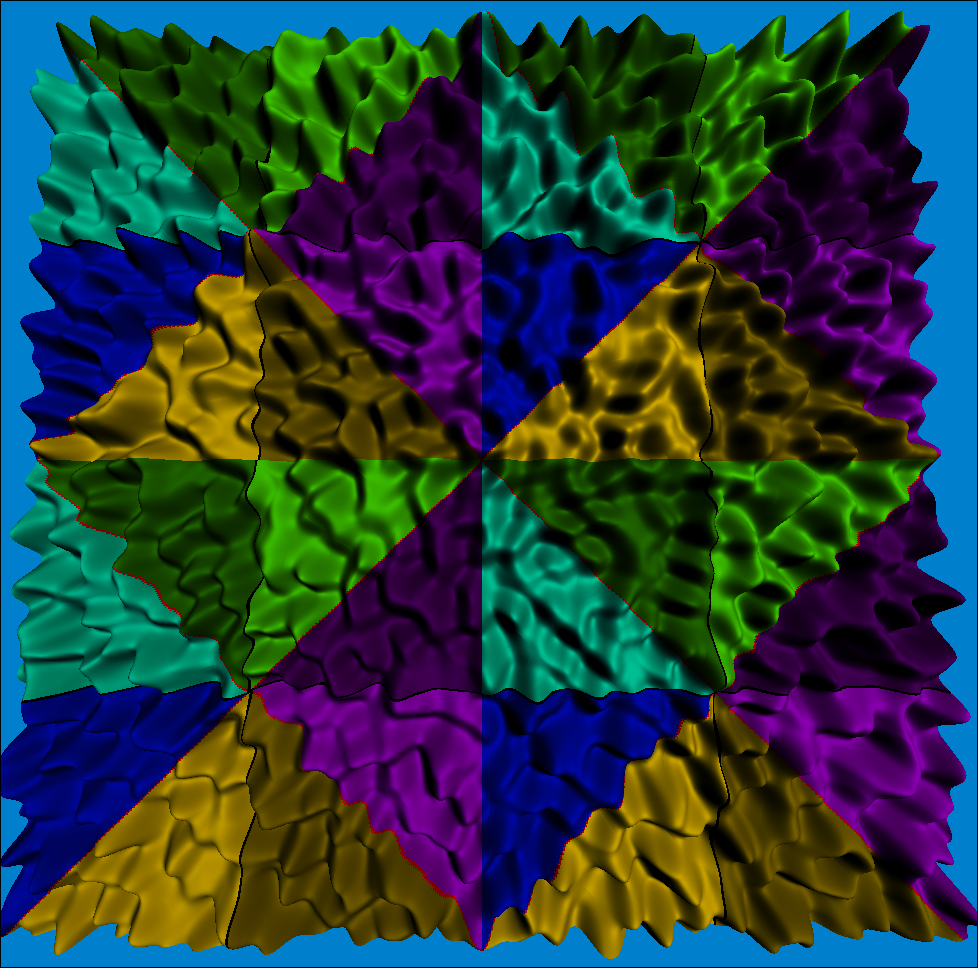 |
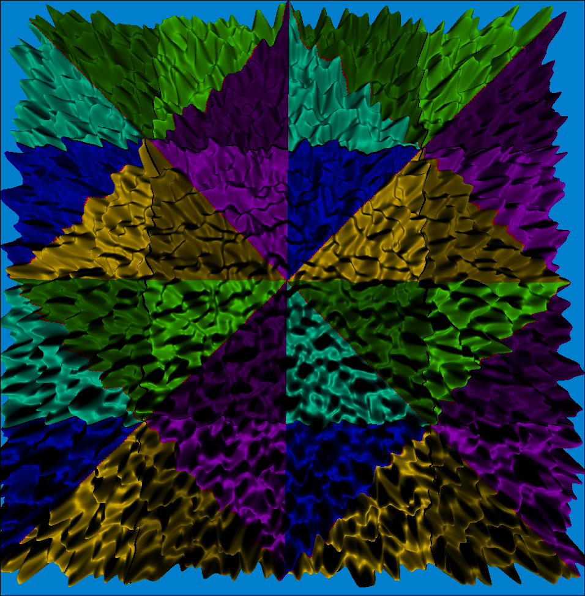 |
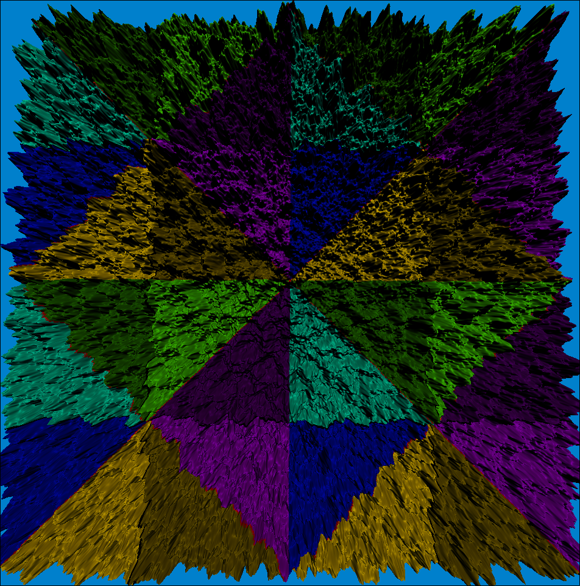 |
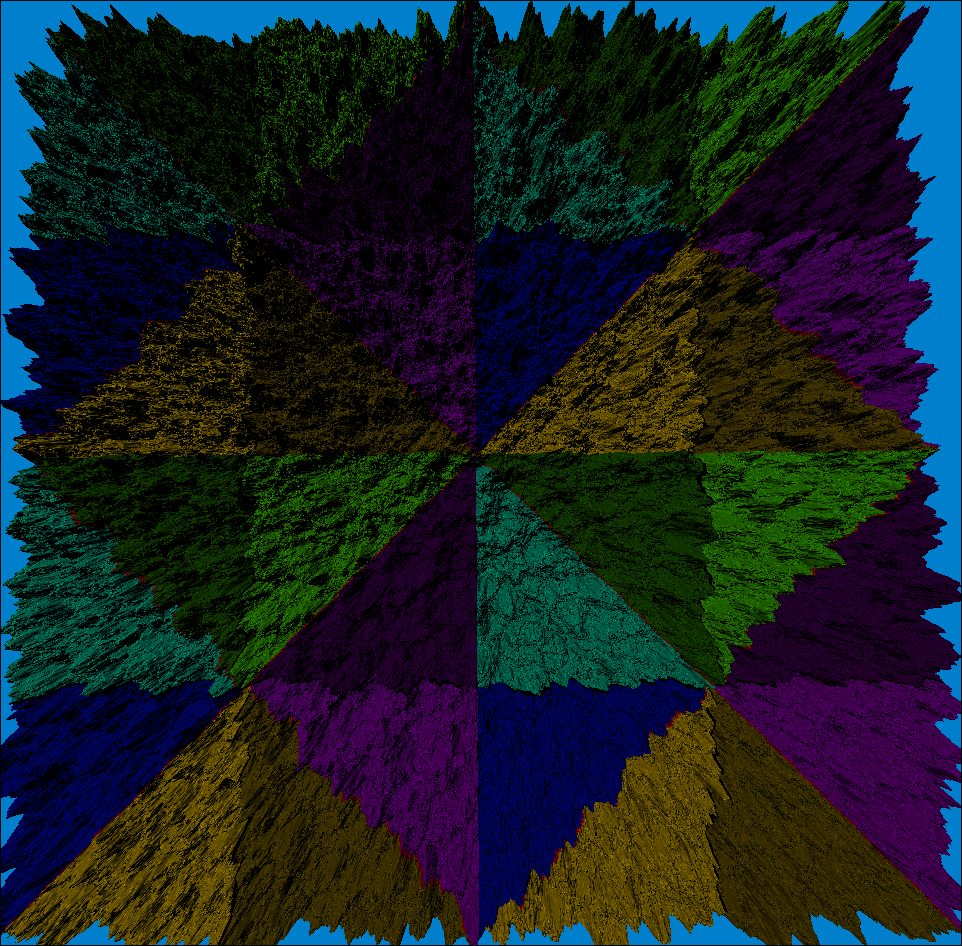 |
| Amplitude:0.5 Scale:0.25 View:~30° |
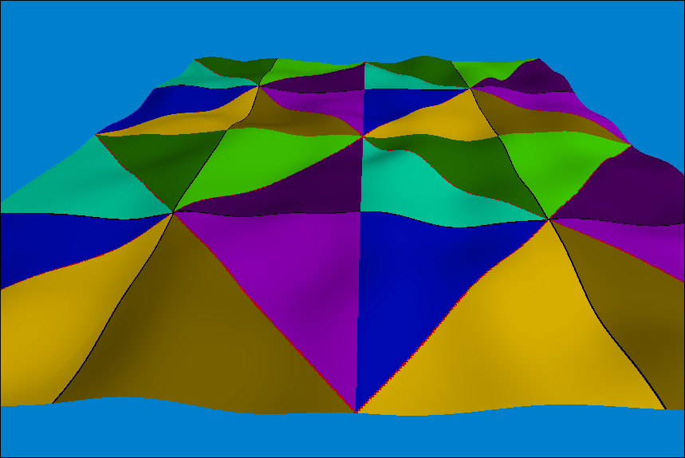 |
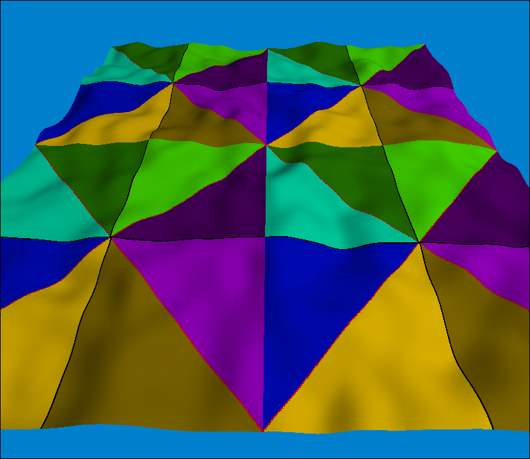 |
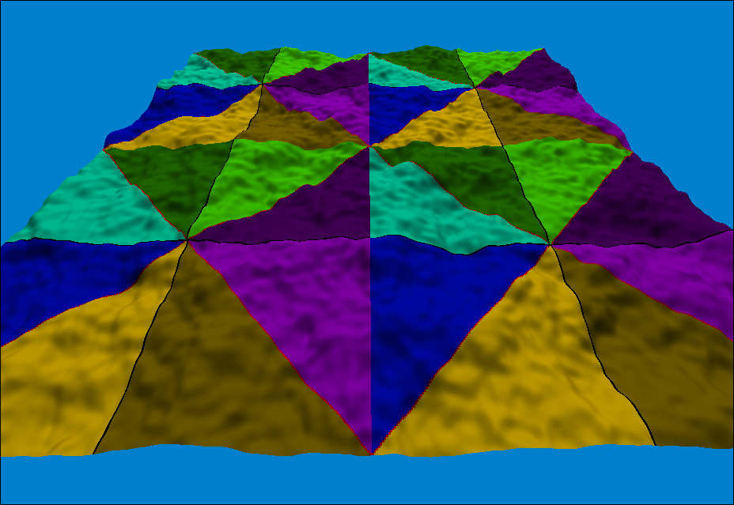 |
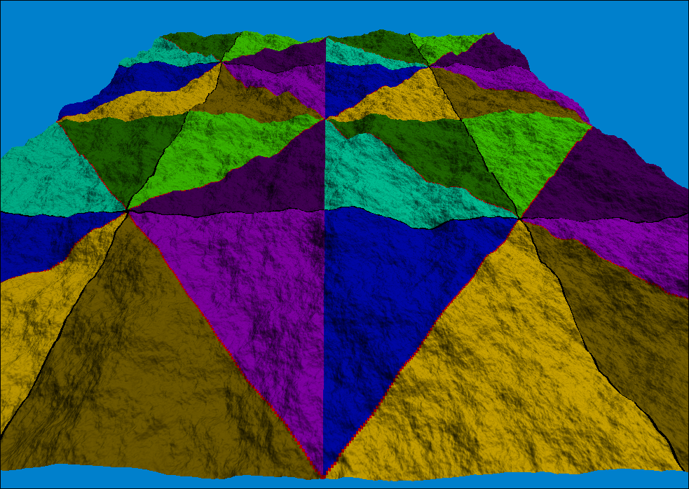 |
Past 8 octaves, you start getting diminishing returns, and computing times become noticable (the 8 octave one started taking multiple seconds). This is in part due to increasing the resolution of the mesh so the new octaves become visible (otherwise, it starts looking low-poly).
To keep the result normalized, you can divide by this sum:

In this case, it doesn't matter if its normalized, but if you were drawing the heightmap as an image (i.e. instead of high, useing brightness), then you would want it normalized. You can use 2 as an approximation if you don't want to calculate the actual sum.
The next problem is that a large region of this noise starts looking repetative, even with multiple octaves.
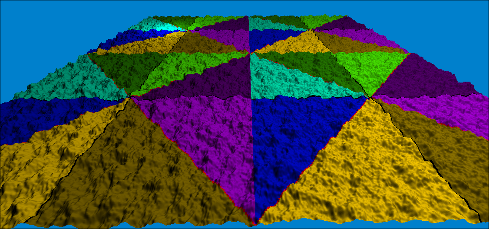
This can also be solved fairly easily, but takes more of an artistic direction. Mostly, it involves making multiple noisemaps, and doing some combination of adding and multiplying them. To maintain the normals, lets calculate the derivative of the product of two functions:
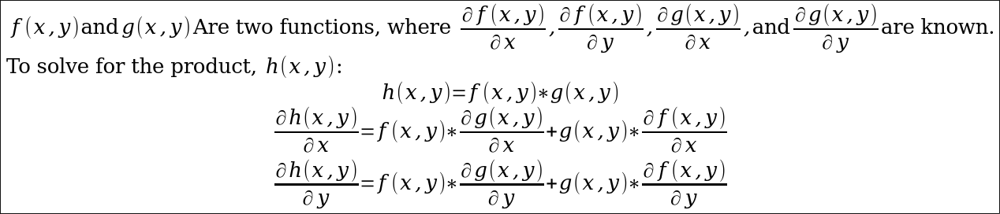
Applying this to two noisemaps, one with 4 levels and 0.1 scale, the other with 1 level and 0.01 scale, gives us:
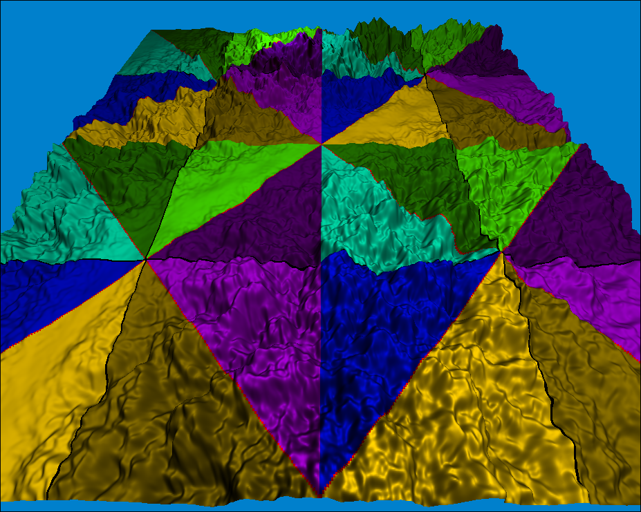
Here, I multiplied a noisemap by itself to produce a mountain range, and multiplied that by another truncated noisemap (remapped from [-1, 1] to [-0.5,1.5], then set anything negative to 0) to decide where the mountains get placed.
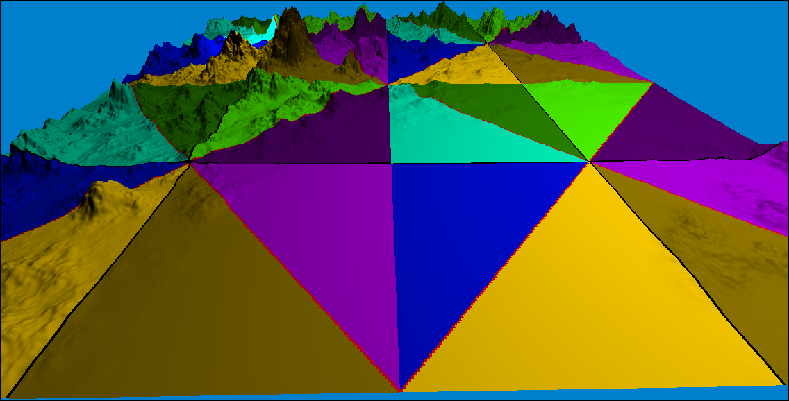
Appling both together:
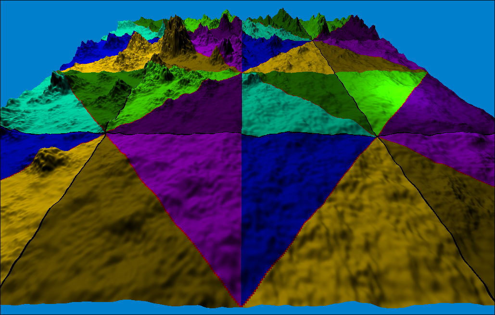
Similarly, rivers can be made:
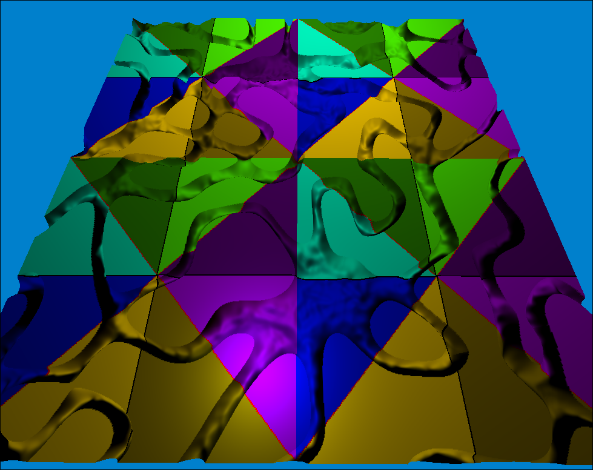
And combined:
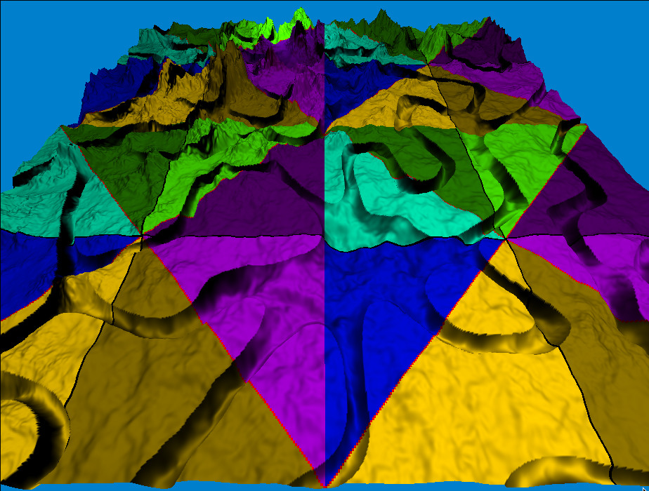
Replacing the texture with some height based shading, and tweaking the mountains:
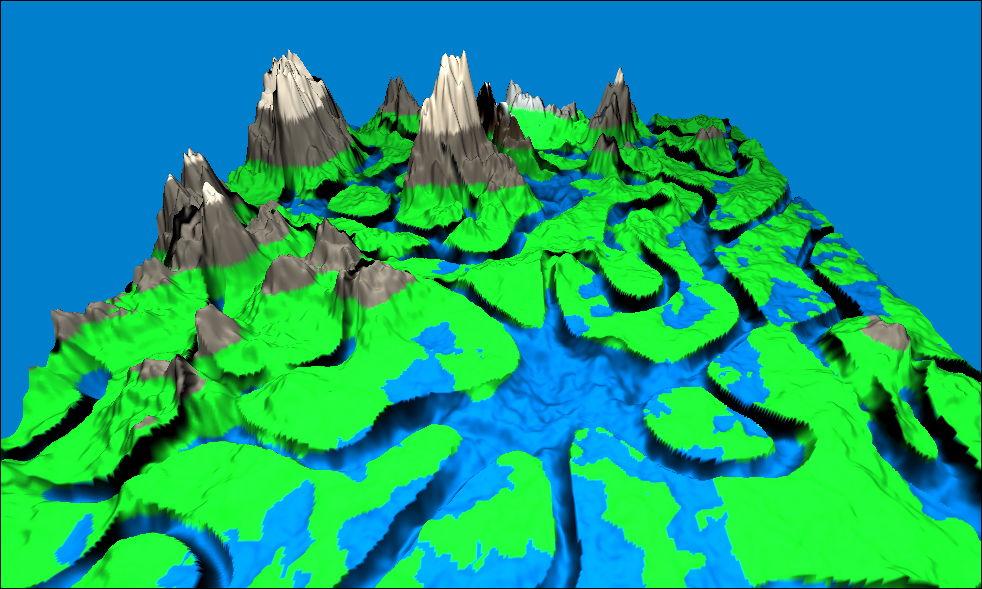